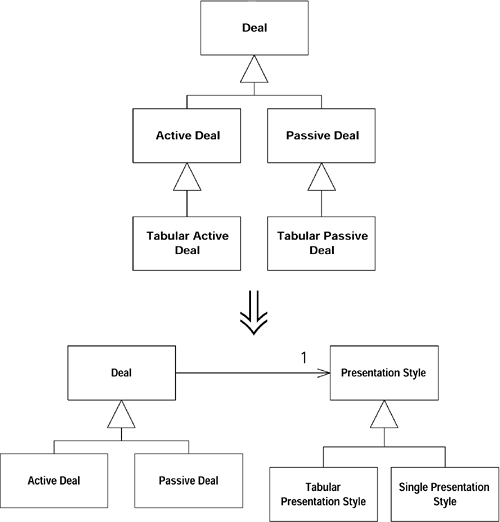
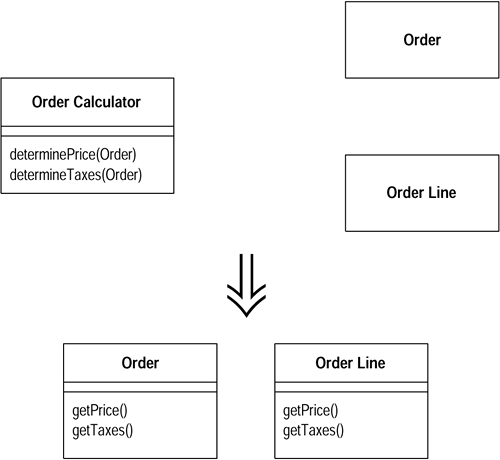
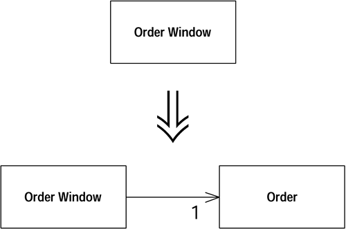
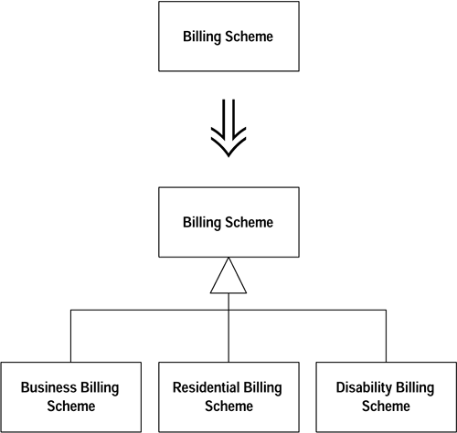

Refactoring 12. 복합 리팩토링
2015, May 19
refactoring
- 서론
- 앞에서는 리팩토링의 각 기법에 대해서만 설명함. 전체적인 구도와 적용을 살펴보지 않음.
- 복합 리팩토링은 시간이 좀 걸린다. (수개월에서 수년) 곧바로 만족감을 느낄 순 없다. 자신의 프로그램 덕택에 세상이 좀 더 안전해 진다는 신념
- 리팩토링은 기능을 추가할때나 버그를 수정할때 실시하자. 시작했을때 끝을 봐야 하는건 아님 실제 작업을 수행하는데 필요한 만큼만.. 필요하다면 언제든지 되돌릴 수 있다.
- Tease Apart Inheritance
You have an inheritance hierarchy that is doing two jobs at once.
Create two hierarchies and use delegation to invoke one from the other.
- 상속을 통해 하위 클래스 코드를 줄일 수 있음.
- 상속을 오용하다보면 상속 구조를 풀기 힘들 정도로 복잡하게 얽히고 코드 중복이 발생된다.
- 지저분한 상속 구조를 정리하기 위해서..
- 계층구조의 특정 계층에 있는 모든 클래스의 하위클랫들의 이름 앞에 같은 형용사가 붙어있다면 한 계층으로 두 기능을 수행하는 것

- 계층구조에 의해 수행되는 각종 기능들을 확인하자. (428 p 하단 표) => 1. 거래 유형에 따른 변화 , 2. 표현 스타일에 따른 변화
- 기능의 우선 순위를 정하고 어떤 기능을 남길지 정한다. => 표현 스타일을 이동
- 클래스 추출 (12-2 그림)
- 추출한 객체의 하위 클래스를 만들자 (12-3 그림)
- 메서드 이동 후 하위 클래스 삭제 (12-4 그림)
- 표현 스타일에서 Active와 Passive 구분을 제거 (12-5 그림)
- 부수적인 하위 클래스들을 모두 삭제할때까지 위 과정을 반복 (메서드/필드 상향) (12-6 그림)
- Convert Procedural Design to Objects
You have code written in a procedural style.
Turn the data records into objects, break up the behavior, and move the behavior to the objects.
- 절차 코드 기능의 고질적인 문제를 (객체지향적으로)해결하기 위해서

- 레코드 타입은 덤 데이터 객체로 변환 (Model, Bean 객체)
- 모든 절차 코드를 하나의 클래스로 넣음
- 긴 프로시져를 메소드 추출로 쪼갠 후, 메소드 이동을 적용한여 적절한 덤 데이터 클래스로 옮김
- 원본 클래스의 모든 기능을 삭제할때 까지 반복
- Statement 메소드 쪼개기 (27 p -> 추출 : 32 p -> 이동 : 38 p)
- Separate Domain from Presentation
You have GUI classes that contain domain logic.
Separate the domain logic into separate domain classes
- 비즈니스 로직을 인터페이스 코드에서 분리하기 위해서

- 도메인 클래스를 작성
- 사용자 인터페이스에서만 쓰이는 데이터를 제외하고 모든 데이터를 도메인 객체로 옮김
- order와 window의 테이블 행을 위한 order line 클래스 생성
- 로직 역시 도메인 객체로 옮김
- Extract Hierarchy You have a class that is doing too much work, at least in part through many conditional statements.
Create a hierarchy of classes in which each subclass represents a special case.
- 매우 복잡한 클래스를 여러 하위 클래스로 전환해서 단순화 하기 위해서

- 분리할 기능을 구분
- 하위 클래스를 작성하고, 생성자를 팩토리 메소드르 전환
- 조건문을 재정의로 전환하는 기법을 사용하여 하위 클래스에 메소드 재정의